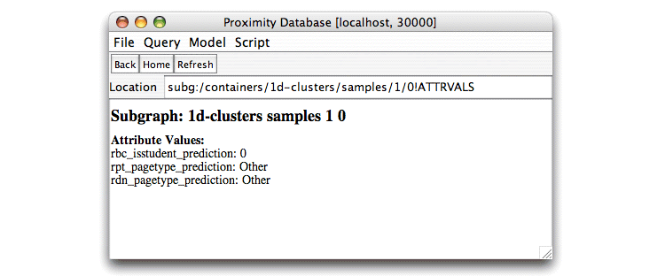

A relational dependency network (RDN) [Neville and Jensen, 2003], [Neville and Jensen, 2004] is a graphical model that extends the concept of a dependency network [Heckerman, et al., 2000] for relational domains. RDNs approximate a joint probability distribution over the attributes of objects in a network with a set of conditional probability distributions. The RDN learning algorithm is based on pseudolikelihood techniques, which estimate a set of conditional probability distributions independently. This approach avoids the complexities of estimating a full joint distribution and can incorporate existing techniques for learning conditional probability distributions of relational data (e.g., RPTs). Gibbs sampling inference techniques are used to recover a full joint distribution and to estimate probabilities of interest.
The example below continues the task of classifying web pages. The web pages in the ProxWebKB database use the pagetype attribute to indicate a page’s type. We train a new RPT to use as the conditional probability distribution for the pagetype attribute in the RDN. The RDN uses this conditional probability distribution (i.e., this RPT) to collectively infer the value of the pagetype attribute for all of the core objects in the test set.
This section describes the script found in
$PROX_HOME/doc/user/tutorial/examples/run-1d-clusters-rdn.py.
Import the necessary class definitions.
from kdl.prox.model2.common.sources import * from kdl.prox.model2.rpt import RPT from kdl.prox.model2.rdn RDN from kdl.prox.model2.rdn.modules.listeners import LoggingListener
Get the training and test sets. We use the same containers for the training and test sets as we did for the previous RBC and RPT examples.
trainContainer = prox.getContainer("1d-clusters/samples/0")
testContainer = prox.getContainer("1d-clusters/samples/1")
Train an RPT that predicts the value of the pagetype attribute. For this RPT, we also consider the value of pagetype for related objects in predicting its value for the core object. Because we may not know the value of pagetype for the related objects during inference, the RDN uses the conditional probability distribution represented by the RPT in a Gibbs sampling procedure to collectively infer the value of pagetype for all core objects simultaneously.
See Exercise 7.2 for a more detailed description of the data structures used in the RPT portion of this script.
coreItemName = 'core_page' attrToPredict = 'pagetype' classLabel = AttributeSource(coreItemName, attrToPredict)
Define the set of sources to be used in learning the RPT.
inputSources = [ \
AttributeSource('core_page', 'url_server_info'), \
AttributeSource('core_page', 'url_hierarchy1b'), \
AttributeSource('linked_from_page', 'page_num_outlinks'), \
AttributeSource('linked_from_page', 'pagetype'), \
AttributeSource('linked_to_page', 'page_num_inlinks'), \
AttributeSource('linked_to_page', 'pagetype'), \
ItemSource('linked_from_page'), \
ItemSource('linked_to_page') ]
Begin the modeling portion of the script by instantiating the component RPT. Set the maximum tree depth to three.
print "Beginning modeling section" print "Instantiating component RPT..." rpt = RPT() rpt.learningModule.stoppingModule.setMaxDepth(3)
print "Learning component RPT..." rpt.learn(trainContainer, classLabel, inputSources)
Write the RPT to an XML file. The file is written to the current
working directory, which is
$PROX_HOME if you are following the tutorial.
xmlFileName = 'ProxWebKB_RPTforRDN.xml' rpt.save(xmlFileName) print "RPT written to ", xmlFileName
Begin the RDN portion of the script by instantiating the RDN using the default constructor.
print "Instantiating RDN..." rdn = RDN()
Like the RPT code, Proximity’s RDN code has been modularized to permit easier maintenance and additions to the code. Use these modules to override the default values for the model’s parameters.
RDNs use Gibbs sampling
for inference. Use the statistics module to specify the parameters
for the Gibbs sampling. For this example, we skip the first 100
trials (burnIn) before
beginning sampling and record every third trial.
A value of 2 means that we skip two trials between recordings.
rdn.statisticModule.setBurnInSteps = 100 rdn.statisticModule.setSkipSteps = 2
The example script stops after 200 iterations to limit execution time for the purposes of the this tutorial. Determining the appropriate number of Gibbs sampling iterations can require judgment and experience with this technique. Many more iterations will likely be needed in practice.
numIterations = 200
Finally, to help us trace script execution, we print a logging statement every 10 iterations.
rdn.addListener(LoggingListener(10))
Because the RPT has already been trained,
there is no separate training step in this script and we can apply the
RDN to the test container.
Each component RPT makes predictions about the subgraphs in the test
container. Applying the RDN returns a map of RPTs to Predictions
objects. In this example, we have a single component RPT.
print "Applying RDN..."
predictionMap = rdn.apply({rpt: testContainer}, numIterations)
rptPredictions = predictionMap.get(rpt)
As we saw in Exercise 7.2, we have to tell the RPT where to find the true values for the class labels.
rptPredictions.setTrueLabels(testContainer, classLabel)
Write the predictions to the database as attributes on the subgraphs in the training container. The RDN uses Gibbs sampling to jointly estimate the marginal probabilities for each of its component models (the single RPT in this case). The RDN then sets the predictions in each component model. Therefore, we write out the predictions from this component RPT rather than the RDN.
print "Writing predictions..." rdnAttrName = "rdn_pagetype_prediction" rptPredictions.savePredictions(testContainer.getSubgraphAttrs(), rdnAttrName)
print "Computing accuracy..." acc = (1 - rptPredictions.getZeroOneLoss())
To compute area under the ROC curve we need to know which pagetype value is considered to be a positive instance. A student page (a positive instance) has a value of “Student” for the pagetype attribute.
print "Computing area under ROC curve..."
auc = rptPredictions.getAUC('Student')
Print a summary of evaluation results.
print "RDN results:" print " Accuracy: ", str(acc) print " Area under ROC curve (Student): ", str(auc)
Exercise 7.4. Learning and applying the relational dependency network model:
This script requires entities created in Exercise 6.4 and Exercise 7.2. You must have completed these exercises before running the script in the current exercise.
Before beginning, make sure that you are serving the ProxWebKB database using Mserver. Start the Proximity Database Browser if it is not already running.
If you have not already done so, copy
rpt2.dtd to the same directory as that containing
the saved RPT XML file, ProxWebKB_RPT.xml.
> cp $PROX_HOME/resources/rpt2.dtd $PROX_HOME
Proximity requires that the
DTD
file rpt2.dtd
be in the same directory as the RPT file to be read.
From the Script menu, choose Run Script. Proximity displays the Open dialog.
Navigate to the $PROX_HOME/doc/user/tutorial/examples directory and
choose run-1d-clusters-rdn.py.
Click Open.
Proximity opens a window to show you the output from the script
along with a trace of the script execution. The
run-1d-clusters-rdn.py script may take many
minutes to run.
Your output should look similar to the following trace
(a portion of the trace as well as leading information showing elapsed
time and execution thread have been omitted from the trace for
brevity):
Status: starting running script:
/proximity/doc/user/tutorial/examples/run-1d-clusters-rdn.py
Beginning modeling section
Instantiating model...
Inducing model...
INFO kdl.prox.model2.rpt.RPT - Creating feature tables
INFO kdl.prox.model2.rpt.RPT - Done creating feature tables: 908 features.
INFO kdl.prox.model2.rpt.modules.learning.DefaultLearningModule -
Choosing split for 2068 subgs
portion of trace deleted
RPT written to ProxWebKB_RPTforRDN.xml
Instantiating RDN...
Applying RDN...
INFO kdl.prox.model2.rdn.RDN - RDN Iteration: 0
INFO kdl.prox.model2.rdn.RDN - RDN Iteration: 10
INFO kdl.prox.model2.rdn.RDN - RDN Iteration: 20
portion of trace deleted
INFO kdl.prox.model2.rdn.RDN - RDN Iteration: 190
INFO kdl.prox.model2.rdn.RDN - RDN Iteration: 200
Writing predictions...
Computing accuracy...
Computing area under ROC curve...
RDN results:
Accuracy: 0.8180938558297048
Area under ROC curve (Student): 0.8578509392814735
Status: finished running script
Note that some parts of the RPT model used in creating the RDN are non-deterministic, so your results may differ slightly from that shown above. You can close this window after the script finishes.
Examine the values predicted by the RDN. Drill down through the container hierarchy in the Proximity Database Browser to display the list of subgraphs for the /1d-clusters/samples/1 container. Click a subgraph ID, then click attrs to display the attributes for that subgraph. The example below shows the value for subgraph 0, which shows that the model predicts that the core page for this subgraph (object 1) has a pagetype of Other You can compare this to the actual value of pagetype by examining the attribute values for object 1.
|  |
Recall that the RDN only makes predictions for core objects in the test container. Therefore, after learning the model, only the subgraphs in the 1d-clusters/samples/1 container have a value for the rdn_pagetype_prediction attribute.